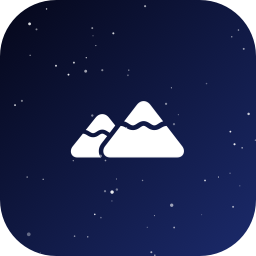

Dark Sky Finder
How dark is the sky where you live, and where's the nearest truly dark spot (Bortle 1–3) you can drive to in an hour? Enter a town and find out.
Your location
Pick a place to begin.
- 1
- 2
- 3
- 4
- 5
- 6
- 7
- 8
- 9
Dark spots within an hour
How this works (and how far to trust it)
This is a browser port of the light-pollution grid from AstroScout, an iOS night-sky photography app I built earlier. For the area around you it:
- downloads NASA's VIIRS Black Marble night-lights image (2016) from GIBS,
- turns each 3 km cell's brightness into an estimate of the light it sends up,
- spreads that light over everything within 150 km, fading with distance, because a city's glow reaches far past its edge,
- converts the total into zenith sky brightness (mag/arcsec², what a Sky Quality Meter reads) and a Bortle class.
The model's three constants were fitted to 14 places with roughly known sky brightness, from Midtown Manhattan to Big Bend. It lands within one Bortle class of all of them, with a typical error of about 0.3 mag. Treat it as a good first guess: the satellite picture is from 2016, and the model can't see hills that block a light dome, clouds, the Moon or one floodlit gas station.
Drive times come from the free OSRM demo router, to the nearest road. City search by Open-Meteo, ZIP codes by Zippopotam.us, map © OpenStreetMap contributors. No tracking; your last place is remembered on this device only.
Want dates too? Day 2's Milky Way Calendar finds the best moonless nights.